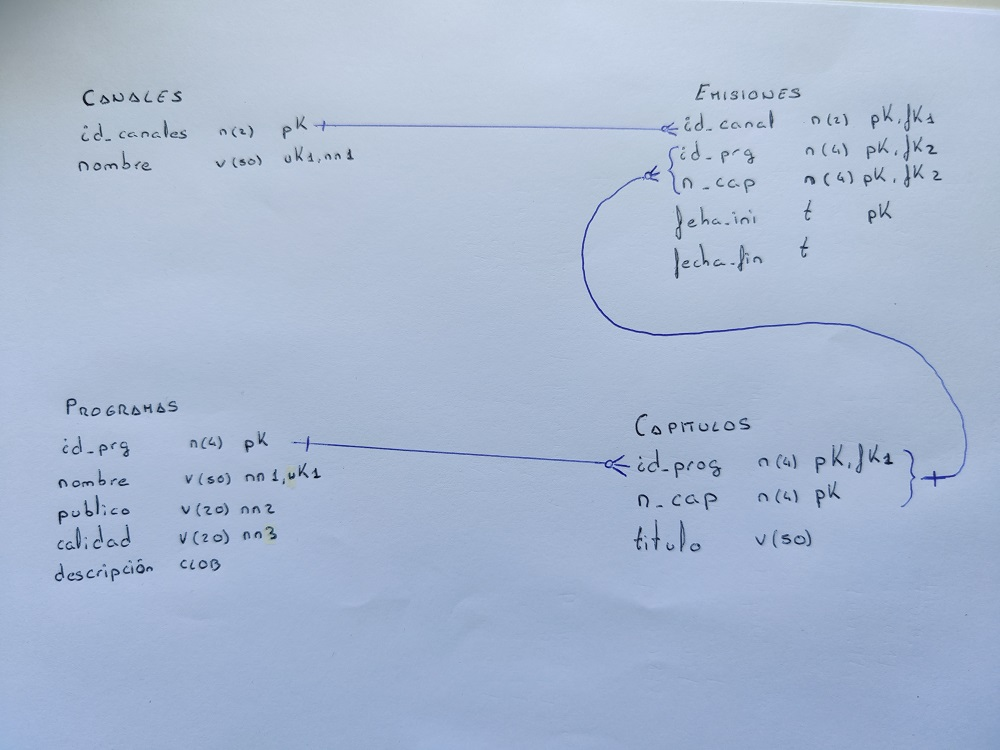
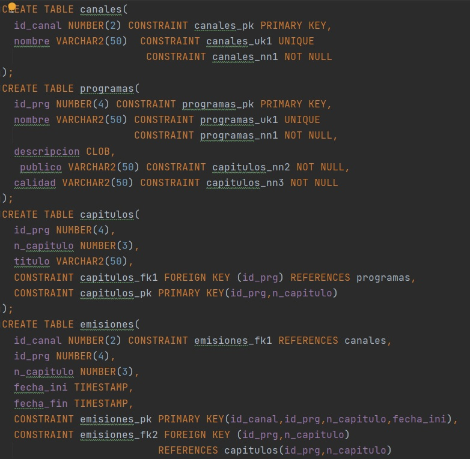
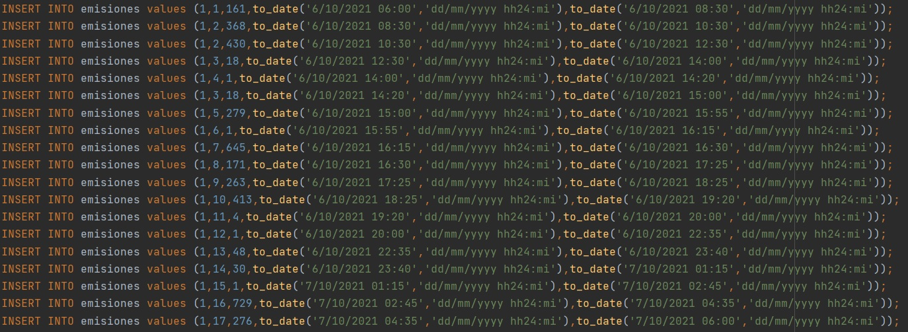
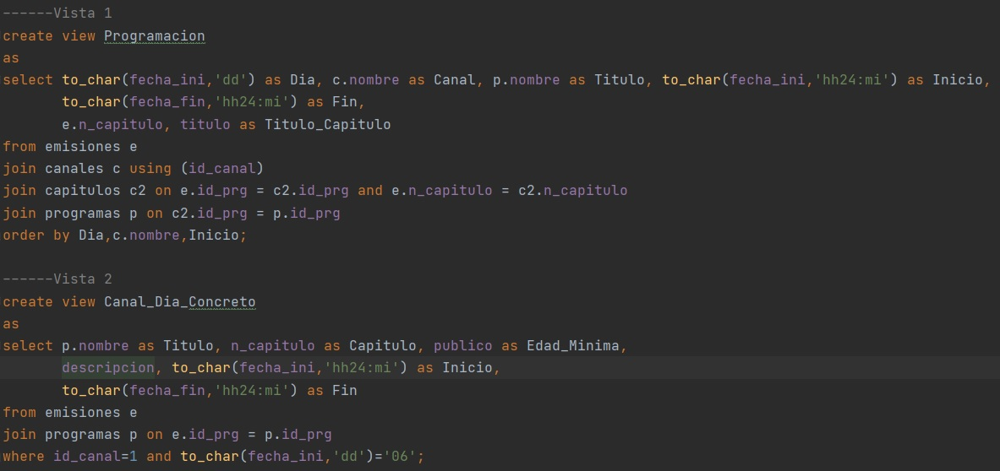

Este proyecto consistirá en un repasode todo lo aprendido en el primer curso de ASIR en la asignatura de Gestión de Base de Datos, para ello crearemos una base de datos sobre dos canales de television en mi caso son La 1 y el canal 24H.
Lo principal de este proyecto es crear un buen esquema de entidad relacion que me va a permitir guiarme a la hora de crear las tablas y sus restricciones y que no se genere ningún error cuando proceda a introducir datos. He decido que necesitare utilizar tablas que son: Canales, Porgramas, Capitulos y Emisiones, sus contenidos y relaciones podremos verlos en la siguiente foto.
Una vez finalizo el esquema procedo a crear las tablas, de esta forma las he creado:
Tras crear las tablas ya puedo pasar a introducir los datos que es el proceso más largo, introducire la programación de los canales que menciono anteriormente (Nombre del programa, capítulo, nombre del capítulo si es necesario, horarios, descripción del programa, limite de edades). En la siguiente foto podemos ver el procedimiento que he seguido para meter los datos (solo es la programación de un dia y un canal).
Una vez finalizo el proceso de introducir datos comienzo a crear las vistas que se nos piden en el trabajo, aquí podemos ver dos de ellas.
Tras terminar de realizar todo el proyecto se realizara esta explicación sobre los pasos que he seguido para crear la base de datos y será introducida en su parte correspondiente del portfolio creado en el proyecto de Implantación de Aplicaciones Web.